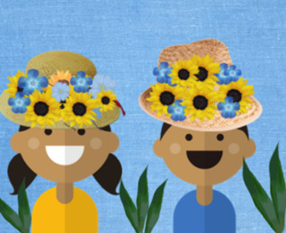

Igbá Ayó Òdàrà
|  | |
|---|---|
| Alicya Thamirys Cardoso do Nascimento | João Francisco Bezerra e Vaulécio Vital da Silva |
Nesta obra, temos a representação de Logunedé, resultado do amor entre Oxóssi, Orixá do conhecimento e das florestas, e Oxum, Orixá do amor e fecundidade. Logunedé é o Orixá das caças e pescas, representado pelas cores azul e amarelo que herdou de Oxóssi e Oxum respectivamente, além das folhas usadas para representá-lo, mas mais comumente é encontrado penas de pavão no lugar. |
O autor da obra representou o Orixá Exu, guardião da comunicação, disciplina, ordem e paciência, através das cores marcantes da entidade: vermelho e preto, além de seu marcante tridente. E talvez tal chama seja para representar o protagonismo da comunicação para Exu, já que é o guardião da mesma, e por ser o único Orixá de Esquerda - que age tanto na luz quanto nas sombras - ele está mais conectado aos humanos que os outros, e o princípio de vida em sociedade é a comunicação, portanto, há uma conexão clara entre seu principal domínio e o modo como age. |
 |
 |
|---|---|
| Carlos Antônio do Nascimento Filho e Lucas Oliveira Barbosa |
Emanuelle Mikaeli de Oliveira |
A obra atual tem um grau de complexidade um pouco maior que as outras: primeiro é necessário saber quem é Ogum: um Orixá guerreiro e destemido, que nunca abandona quem precisa, no candomblé e umbanda, é o principal símbolo de lutas e conquistas. Suas principais cores são o verde e azul escuro, presente na obra pela mata e o céu da noite. E como Ogum é comumente chamado antes das pessoas enfrentarem batalhas muito difíceis, é o que provavelmente está acontecendo na imagem: a espada por representar uma batalha a vir, as correntes representam o ‘destino’, não há como escapar daquela batalha que há por vir e esse homem está se preparando para isso. |
Orixá Nanã, a mãe de todos os Orixás, aquela que estava presente quando Oxalá deu o primeiro sopro de vida aos humanos. Está representada na imagem pelas árvores, flores, a coruja representando os animais no geral e também há conchas para representar a vida marítima. A Orixá que é mãe, a origem de tudo, mas também a guardiã do portal que separa a vida da morte, em outras palavras: a Orixá da Morte. |
 |
|
|---|---|
| Sara Araújo de Souza | Gabriel da Silva Soares |
A obra nos mostra o mundo, o oceano, terra e a mão de alguém. A cena serve para representar Nanã e Oxalá, além de Oduduwa. Nanã está representada na imagem através do oceano, do mar representado, pois ela pegou do fundo do lago onde ela vivia uma grande porção de barro para que Oxalá, representado pela terra e simbolizando a parte/plano físico, pudesse moldar a vida de todos nós.E Oduduwa está representado pela mão pois é ele quem é responsável por dar o sopro da vida, a parte espiritual, assim como a mão cósmica está alcançando o planeta Terra na imagem. |
Aqui temos Xangô, Orixá da Justiça Kármica, que domina o fogo e raios. Há uma representação de uma das história mais famosa de Xangô: Quando seus inimigos planejavam derrotá-lo e se juntaram contra ele e o Orixá estava perdendo a batalha, ele estava a observar do alto de pedreiras (representado pelas montanhas). Sem saber o que fazer, ele bateu seu machado e viu que eles estavam fazendo faíscas, bateu de novo, e de novo, inúmeras vezes, até que tais faíscas se tornaram raios que derrotaram seus inimigos e deram a vitória ao seu |
| Haniel Lucas Machado Rocha e Safira Vitória Silva dos Anjos |
Joyce Belarmino |
|---|---|
O elemento mais chamativo da imagem é o Ankh, ou cruz ansata, que muitas vezes simboliza a vida. A obra original tem relação com a Orixá Oxum, divindade do amor, fecundidade e da natureza, e esse sentido é reforçado através das flores e da abelha, já que a abelha é muito necessária para a manutenção da vida na Terra pois leva os poléns das flores para outras, realizando a fecundação. E Oxum é muito simbolizada pelas mulheres, por isso estão presentes nas fotos, para representar a ‘vida’, potencial da natureza. |
A obra representa a Orixã Iansã (ou Oyá). Com a presença de animais típicos de uma savana africana, a imagem mostra a representação dela sendo uma Orixá forte na batalha, não tão delicada como as outras Orixás, uma guerreira, já que geralmente a imagem nas mitologias são de divindades femininas não guerreiras e Oyá quebra esse padrão. Sendo responsável pelas mudanças climáticas e estando muito conectada à natureza e ventos, as folhas e cores verdes presentes na releitura são para ressaltar isso. |
| Luana Grazielly e Renata Rayane |
Maria Luiza Batista |
|---|---|
A obra acima representa Ossaim, Orixá curandeiro e pai das plantas sagradas. Os traços dele estão representados na imagem pois foi ele quem nomeou todas as plantas e conhece cada uma, além de ser uma divindade mais reservada e cuidadosa, por isso está escondido em meio a natureza observando algo ou alguém porém sem se arriscar a chegar perto antes de analisar a situação. |
A imagem nos mostra Ewá, orixá da sensibilidade e da vidência, que é a responsável por pintar o céu para trazer o céu, transformando-o em um lindo laranja forte ou um azul ameno, e então transformando-o novamente em azul escuro trazendo a noite. A principal mensagem da obra é provavelmente para trazer esse sentimento de prazer, felicidade e nostalgia trazendo as memórias do céu a tona, junto com uma bela paisagem. |
| José Enzo Costa Almeida e Davi Gabriel Costa Nolasco |
|---|
A obra representa Oxalá, o Orixá que devolve todos ao barro, oferecido por Nanã, desfazendo nossos físicos e deixando nossos espíritos para os outros Orixás. Embora na cultura cristã, predominante aqui no ocidente, a morte seja vista como algo negativo, nas culturas africanas é vista como algo normal, já que sempre teremos um fim, por isso seu ‘poder’ é transmitido tão calmamente na imagem. A cor do Orixá, assim como a cor do luto para o candomblé e umbanda, é o branco, representado no céu da imagem pelas nuvens, e talvez ele esteja em meio às nuvens até para refletir sobre esse misticismo da morte, esse mistério, já que o céu é considerado, nas religiões, pelo paraíso, o ‘após a morte’ muitas vezes. |